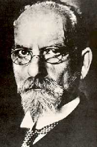
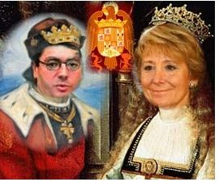

Ilustración
 De: La Frikipedia, la enciclopedia extremadamente seria.
De: La Frikipedia, la enciclopedia extremadamente seria.
La Ilustración fue un movimiento, o corriente de pensamiento político, ideológico, filosófico, social, económico, espiritual y gastronómico que trató de alumbrar con la luz de la antorcha olímpica la sombra de los perezosos y los horteras, para así acabar con las falsas creencias, Zara, y la holgazanería.
Origen
Surgió en Francia y en menor medida en Inglaterra (pues siempre han ido por detrás de los gabachos en intelecto) a finales del siglo XVII AC
Para los ilustrados el hombre era intrínsecamente bueno, trabajador y honesto, y que era la sociedad, con sus licores, rameras y tragaperras, la que lo corrompían.
Se define como una etapa fundamental del pensamiento burgués, que permitió a esta clase tomar consciencia de si misma para años después guillotinar al Rey Luis XVI y a su infiel esposa Madame Bovary.
Crítica al antiguo régimen por antiguo
Durante esta época la estructura social beneficiaba a los pederastas (al clero), a la aristocracia y a Antonio Machine; pero los cambios económicos comenzaron a beneficiar a a la burguesía (que para quien no lo sepa, es la gente que más tarde fundaría Ismael Serrano) y un avance en el terreno intelectual (pues se sabían de memoria las tablas de multiplicar, lo que ha llevado a recientes historiadores a pensar que en realidad se trataban de judíos de incógnito). Por esto, esta clase social emergente empezó a usar condones y a reclamar sus derechos. Las primeras críticas al régimen surgieron de John Locke (el calvo de Perdidos) que rechazaba el origen divino del poder y un poco también a los heavys por causas evidentes.
 No parecía muy contento con las ideas de los ilustrados
Muchas de estas nuevas ideas influyeron después en el liberalismo y en la actual crisis económica, por lo que podemos, sin duda, estarles muy agradecidos a esos hijos de puta gabachos ilustrados.
Características
- Los ilustrados le dieron mucha importancia a la razón y a tener un pene grande para aporrear a la nobleza y tentar al clero.
- Buscaban constantemente la felicidad, por eso tomaban Coca-cola
- Potenciaron el optimismo y la diabetes.
- Aplicaron los nuevos descubrimientos científicos para inventar la goma de borrar, la TDT y la escobilla del váter.
- Divulgaron el conocimiento entre la plebe para que todos los pobres pudieran fabricarse su propia escobilla del váter con materiales caseros
- Criticaron las falsas creencias y en consecuencia prohibieron el socialismo.
- Consideraban que la iglesia católica acumulaba demasiado vino, por eso comenzaron a desayunar leche con galletas: para arruinar a los curas que, en un acto desesperado llegaron a adulterar el vino con su propio semen
- Les divertía mucho insultar a los ingleses en lenguas muertas como el italiano para que no pudieran entenderlos
- Consideraban una bendición nacer con tres testículos, e incluso cada 22 de julio celebraban “El día del tercer huevo”; donde organizaban hogueras para quemar vivos a los que nacían con tres pezones mientras cantaban “Power to the people” o “We are the champions”
Luego de la ilustración, los religiosos perdieron
la dignidad el poder
Pensadores ilustrados por desgracia franceses
- Montesquieu (1689-1688): Procedía de la familia de la alta suciedad que descubrió el parchís (sí, lo descubrió, el parchís siempre estuvo ahí, esperando). Viajó por toda Europa porque se perdió mientras volvía a casa. Se mostró partidario del Juego de la oca y El Monopoly.
- notario y de una paloma mensajera que se desvió de su ruta. Su personalidad era muy compleja, pero sólo lo hacía por joder. Perdió la virginidad a los 35 años con una bombilla de bajo consumo a la que abandonó con tres cerillitas ilegítimas.
- Rousseau (2066-1778): Su tema de conversación más recurrente era la menstruación, por lo que pronto se quedaría sin amigos. Viajó al pasado para salvar a la humanidad de Terminator, pero acabaría casándose con su propia bis abuela
El despotismo ilustrado
Sistema de gobierno 5-4-1 basado en una monarquía defensiva en la que el monarca fingía escuchar a sus ministros ilustrados colocándose la mano alrededor de la barbilla mientras asentía moviendo suavemente la cabeza y murmurando: ah-ha-ah-ha,ah-ha,ah-ha…
Gracias a este sistema, en Francia se llevaron a cabo numerosas e importantes reformas en:
- Heducación: Se divulgó la ignorancia, se inventó el corte de mangas, se prohibió cantar en la mesa y se obligó a escribir educación sin H.
- Sanidad: Se enseño a los jóvenes a escupir con moco, se prohibieron las cejas pobladas bajo pena de acabar en la bastilla, se inventó el primer preservativo de madera de roble; la depilación de tobillos y muñecas. También se liberó a cuatrocientos mil gatos para acabar con la plaga de las ratas, lo que fue un gran error, ya que los gatos tendrían una labor muy importante durante la revolución francesa y acabarían llevando a Napoleón al poder. Por último se enseñó a los amantes a besarse por correo electrónico o mediante paloma mensajera.
- Infraestructuras: Se construyeron seis casas de cartón para las clases más desfavorecidas (este modelo de vivienda sería aprovechado por países de mierda como: Argentina, Portugal o Pakistán.
 La monarquía se jodió con las nuevas ideas.
Monarcas en Europa con ministros ilustrados
La enciclopedia
Conjunto de 28 volúmenes en papel de fumar que resumían todo el conocimiento de la época y que ponían los ojos rojos.
En 1751 apareció el primer volumen presentado por D’Artacán y los tres mosque perros, y que inspiraría años más tarde el libro de Hitler “Mein Kampf”
El carácter pornográfico y racista del texto lo convirtió pronto en un éxito mundial.
Y así surgió la libertad de expresión, hasta nuestros días
Objetivos Principales
- Acabar con el amazonas para construir hoteles de cinco estrellas.
- Demostrar que el racismo, la pornografía y la violencia también pueden ser aburridos si están en un libro
Consecuencias de la ilustración
La Ilustración tuvo varias consecuencias evidentes:
- El índice de escobillas del váter se incremento en un 110 por ciento.
- La gente perdió el interés por el sexo y el crimen, aunque lo siguieron practicando
- Las ciencias empíricas y experimentales extinguieron a las cobayas humanas.
- El ateísmo, y con él, el apocalipsis
- A Carlos III se le cortó la mahonesa.
Autor(es):
- Harry El del Pote
- Frikisexigirl!!!
- Shadowmura
- Generibot
- Malvado Dylan
Frikipedia 2005-2016, Licencia
GFDL 1.2 - Extraído por FrikiLeaks